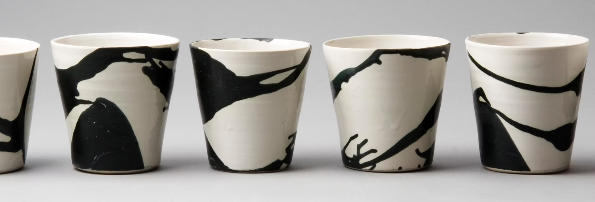
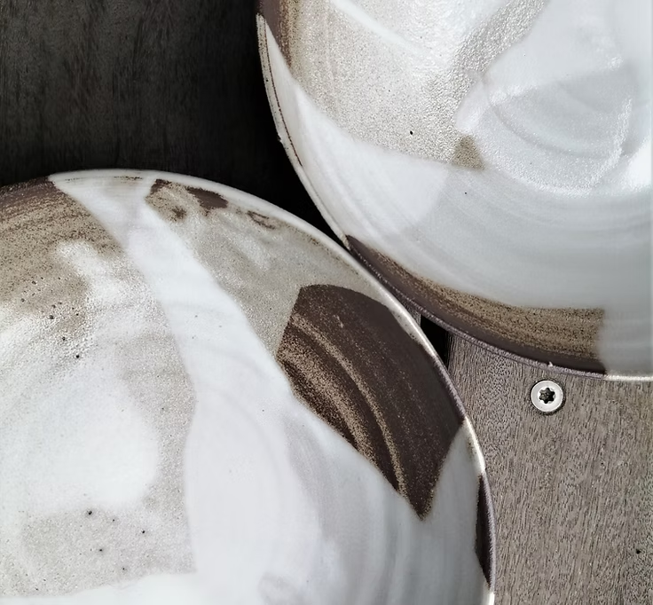

Jeres vision
Vi starter med en samtale om restaurantens stil, behov og den oplevelse, I ønsker at skabe.
Håndlavet i København
Hånddrejet. Håndglaseret. Ikke to er ens.


Keramik til restauranter
Et samarbejde starter med jeres vision. Sammen finder vi form, farve og udtryk.
Se restaurantsamarbejder


Former & glasurer
Rustikke former og abstrakte dekorationer.
Med rødder i keramisk tradition.
Find dit næste stykke keramik i Per Bos webshop.
Besøg webshoppenMennesker bag keramikken
Per Bo er uddannet keramiker og certificeret pottemager. I værkstedet arbejder et lille team med at dreje og glasere hvert stykke i hånden.
Håndværket møder den daglige brug. Form, holdbarhed og udtryk bliver udviklet i tæt dialog med dem, der bruger keramikken.
Besøg os i Flyverbyen
Et fælles udtryk
Til restauranter, hvor service
og mad skal spille sammen.
Vi starter med en samtale om restaurantens stil, behov og den oplevelse, I ønsker at skabe.
Vi undersøger eksisterende former og glasurer. Nye kombinationer eller prototyper tager idéen videre.
Vi tænker holdbarhed og ergonomi ind, så keramikken fungerer som en del af restaurantens daglige arbejde.
Ring eller skriv inden dit besøg.
+45 2341 9211Find vej til værkstedet